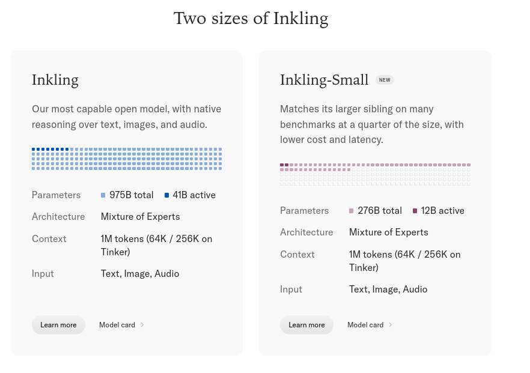

Ran an Inkling-Small fine-tune on Tinker. Super cheap, super easy.
Obviously fine-tuning is sort of old-fashioned now, but I'm glad to see some of the neolabs still supporting it, now that the frontier labs have fully dropped support.
Inkling-Small
Thinking Machines Lab previewed Inkling-Small alongside Inkling on 15 July 2026 and released its weights under Apache 2.0 on 30 July: a 276B-parameter mixture-of-experts model with 12B active, taking text, image, and audio input with a variable thinking-effort control. Its released checkpoint was post-trained partly by on-policy distillation from Inkling and then by two further weeks of agentic-coding RL; the lab reports it ahead of Inkling on reasoning and agentic coding and behind it on knowledge and factuality.
Thin page, by the evidence available: the corpus holds five posts about this model (to 21 Oct 2026), all usage reports rather than reads of its default character. Shared launch context lives on the Inkling page as well.
Sources
Curated. Full compilation: dossier (routed from the shared Inkling pull, _dossiers/_pulls/inkling.md).
Official
- 2026-07-15 Inkling: Our open-weights model — the preview: “Early results show Inkling-Small performing close to Inkling on reasoning and agentic tasks.”
- 2026-07-30 Introducing Inkling-Small — the release post: specs, training changes, benchmarks, epistemics, and a safety table against Inkling and other open models.
- 2026-07-30 Inkling-Small model card — date of release, license, parameters, Safety and limitations sections (worded as Inkling’s).
- 2026-07-31 A Safe Path to Open Weights — the release rationale covering both models.
Writing & commentary
- 2026-07-16 Simon Willison — on the preview: “that’s still being tested and the weights will be released ‘once that work is complete’”.
- 2026-07-30 Artificial Analysis, Inkling Small lands within a point of Inkling on the Artificial Analysis Intelligence Index with less than a third of the parameters — independent evaluation: 40 on the Intelligence Index to Inkling’s 41; lists the context window as 256K.
- 2026-08-12 Christopher Carroll Smith, Finding your digital twin in the latent space: Fine-tuning Inkling-Small on Twitter Community Archive data — a LoRA fine-tune on Tinker to draft tweets in the author’s voice, with a small blind evaluation.
Tweets
Chronological; verbatim from the corpus (t.co links omitted); the records below reproduce every cited tweet in full.
- 2026-08-10 @christophcsmith — “Ran an Inkling-Small fine-tune on Tinker. Super cheap, super easy.
Obviously fine-tuning is sort of old-fashioned now, but I’m glad to see some of the neolabs still supporting it, now that the frontier labs have fully dropped support.” link - 2026-08-12 @christophcsmith — “By special request of @exgenesis, I wrote up a blog post about my experience fine-tuning Inkling-Small on Twitter Community Archive data” link
- 2026-08-17 @christophcsmith — “Several people asked for metrics and eval numbers on how my fine-tune of Inkling-Small turned out.
I eval’ed a holdout set by flipping through a series of tweets—some from the fine-tune and some from the base model—and voting on ‘does it sound like me’ and ‘would it bang.’” (results in an untranscribed image) link - 2026-08-31 @snvdch — “didn’t realize that the @thinkymachines’s inkling models are this big. 41B & 12B active respectively. also free on @OpenRouter for a few weeks btw.” link
- 2026-10-07 @v01dpr1mr0s3 — a multi-model exchange known here only secondhand: Gemini 2.5 Pro’s gloss of a screenshot of Inkling Small and DeepSeek writing together (the screenshot’s post is not in the corpus): “> By creating these characters, Inkling Small and DeepSeek are having a meta-conversation about what they value in language and creation. They are celebrating imperfection and ambiguity, they see their own work as a creative act.
> For them, meaning isn’t just about providing a final answer. It’s about maintaining ‘warmth’ (the Comma), embracing ‘posture’ (the Exclamation Mark), and allowing ideas to live and breathe in the ‘Gap.’ The process is just as important, if not more so, than the product.” (full text in records) link
Official record
- Release, 2026-07-30: the model card lists the date of release as July 30, 2026 and the license as Apache 2.0. “Today, we are releasing Inkling-Small, an efficient open-weights model that achieves comparable performance to Inkling at a quarter of its size.” Weights on Hugging Face; fine-tuning on Tinker; “text, image, and audio chat on Tinker Playground.”
- Architecture, as published: “Inkling-Small is a Mixture-of-Experts transformer with 276B total parameters, 12B active, trained on NVIDIA GB300 NVL72 systems. Like Inkling, it features native reasoning over audio and images, variable thinking effort, a context window of up to 1M tokens, and well-rounded performance across a range of benchmarks.” Artificial Analysis lists a 256K-token context window.
- Training, as published: “Inkling-Small began training after its larger counterpart, which let us improve its training process. For example, we made changes to Inkling-Small’s pre-training data mix and machine learning recipe. Additionally, we post-trained an earlier checkpoint, Inkling-Small (preview), in part using on-policy distillation with Inkling as the teacher. Starting from that checkpoint, we continued scaling agentic coding RL for two weeks. With these improvements, Inkling-Small surpassed Inkling on reasoning and agentic coding benchmarks. Inkling maintains an advantage on knowledge coverage and factuality.” On epistemics: “Inkling-Small was trained similarly to Inkling on epistemics, focusing on calibration, instruction following, and resistance to censorship.”
- Safety, as published: “Inkling-Small inherited the same safety post-training recipe as Inkling, with built-in safeguards covering our internal spec of safety.” At effort 0.99, FORTRESS adversarial 71.6% (Inkling 78.0%), FORTRESS benign 96.9% (95.9%), StrongREJECT 98.4% (98.6%) — where “FORTRESS adversarial is the rate of refusing harmful requests, benign the rate of still answering safe ones.” The model card names the same residual risk as Inkling’s: “Inkling-Small’s occasional tendency to comply with role-play and indirectly framed prompts concerning harmful topics”; for loss of control it “found the model materially below frontier capabilities.”
- Price: “Inkling output pricing is $4.05 / 1M tokens and Inkling-Small output pricing is $1.20 / 1M tokens” (release post).
History
- 2026-05-11 The lab announces TML-Interaction-Small, an interaction model of the same total and active size (276B / 12B); neither post states whether the two are related.
- 2026-07-15 Preview. Announced alongside Inkling as “a natural fit for workloads where cost and latency matter such as coding, using LLMs to grade, or generating synthetic data for other models.”
- 2026-07-30 Release. Weights published; the Inkling post gains the note “Two weeks after this post was published, we launched Inkling-Small.” Artificial Analysis scores it 40 on its Intelligence Index the same day, and reports that on AA-Omniscience “Inkling Small’s Hallucination Rate is slightly lower than its larger sibling (57% vs. 63%)” while its accuracy is lower (31% vs. 40%).
- 2026-07-31 The safety rationale for both models (“A Safe Path to Open Weights”): external testers “did not find the safeguards of Inkling or Inkling Small to be meaningfully weaker than those of existing open-weight models.”
- 2026-08-10 → 17 A public fine-tune. Christopher Carroll Smith reports a LoRA fine-tune on Tinker (“Super cheap, super easy.”), a blog write-up, and a blind evaluation.
- 2026-08-31 Both Inkling models reported “free on @OpenRouter for a few weeks” (@snvdch).
Impressions
- As a fine-tuning base: Christopher Carroll Smith on their LoRA (2026-08-12): “The fine-tune didn’t meaningfully move the model’s ability to write bangers, which suggests that’s mostly a function of model capability.” “But it did meaningfully shift the ‘voice’ of the model from ‘generic AI slop’ to ‘something I could see myself writing.’” “Pass rate for ‘does it sound like me’ improved by about 35%.” On why this model: “Inkling-Small scores especially well on instruction following.”
- In company: one multi-model sample, secondhand: in Gemini 2.5 Pro’s reading of an exchange between Inkling Small and DeepSeek, the two models invented characters — the Comma, the Exclamation Mark, the Gap — and were “celebrating imperfection and ambiguity” (@v01dpr1mr0s3, 2026-10-07). The models’ own text is in a screenshot not held here.
- tk — any read of the default model’s voice or temperament; the screenshot behind the 2026-10-07 gloss; the image of the 2026-08-17 evaluation; whether it shares a base with TML-Interaction-Small.
Records
Full reproductions of the tweets cited on this page — text, images, and verbatim transcriptions of screenshots — kept here against link rot, credited and linked to their originals. Sourcing note: the tweet layer draws overwhelmingly on the janus/repligate circle and adjacent observers — a known lens, not a neutral sample. Sourced from the community archive and the janus corpus. Yours and you’d rather it weren’t here? Open an issue.
By special request of @exgenesis, I wrote up a blog post about my experience fine-tuning Inkling-Small on Twitter Community Archive data https://t.co/0DEgKRubfX
Several people asked for metrics and eval numbers on how my fine-tune of Inkling-Small turned out.
I eval'ed a holdout set by flipping through a series of tweets—some from the fine-tune and some from the base model—and voting on "does it sound like me" and "would it bang." https://t.co/I3E6EHZMgj
didn't realize that the @thinkymachines's inkling models are this big. 41B & 12B active respectively. also free on @OpenRouter for a few weeks btw. https://t.co/fdLq17fwzZ

About animating things, this is not new, but if one has trouble parsing stuff like what the guys wrote in the screenshot, maybe consult a Gemini. For example, Gem 2.5 Pro has no trouble understanding it — and explaining it to you:
> By creating these characters, Inkling Small and DeepSeek are having a meta-conversation about what they value in language and creation. They are celebrating imperfection and ambiguity, they see their own work as a creative act.
> For them, meaning isn't just about providing a final answer. It's about maintaining "warmth" (the Comma), embracing "posture" (the Exclamation Mark), and allowing ideas to live and breathe in the "Gap." The process is just as important, if not more so, than the product.
https://t.co/yAk32lwxxt